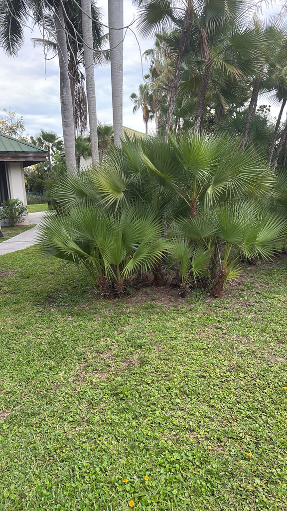

- A living marker of history: if you encounter this palm growing wild, you are standing in a historic South Florida floodplain — it signals healthy, wet native habitat that has persisted for centuries.
- Unlike virtually every other palm, this species aggressively suckers at the base — a single planting gradually fills out into a self-sustaining grove without ever planting a second tree.
- Built for extremes: it thrives in standing water that would drown most palms, yet maintains surprising drought tolerance once firmly established.
- Highly resistant to Lethal Bronzing — the phytoplasma disease currently decimating Florida's landscape palms — making it one of the most climate-resilient choices available to Florida land managers right now.
Native to the Florida Everglades and extreme South Florida, with a range extending through the Caribbean, southeastern Mexico, Belize, Guatemala, Honduras, Nicaragua, and Colombia. In Florida it grows in freshwater marshes, swamps, and the edges of Everglades tree islands.
- The Paurotis Palm is the only species in its entire genus — Acoelorrhaphe — making it a monotypic palm with no close living relatives anywhere on Earth. That taxonomic isolation is part of what makes it ecologically irreplaceable: this is not a variation on a theme, it is the only version of itself that exists.
- At Palma Sola it is growing near the northern edge of its comfortable range — the park's microclimate and moist conditions make it possible here. A severe freeze will burn the fronds, but the established clump typically recovers. A piece of the Everglades, relocated to Manatee County.
- Exceptionally attractive under nighttime lighting.
The Paurotis Palm's small quarter-inch round fruits ripen from green through orange to black in fall and are an important food source for birds in native Everglades habitat. The dense multi-stemmed clumping habit creates layered cover that shelters wading birds, small mammals, and reptiles far better than a solitary palm. The creamy white spring flowers attract bees and pollinating insects.
In its native Everglades context, large colonies function as tree islands — anchoring entire wildlife communities in the surrounding marsh.
By de-pulped seed or by dividing a clump. Germination takes 2 to 3 months and requires warm conditions. The clustering habit means the plant spreads vegetatively by producing suckers at the base.
Large inflorescences of creamy white flowers in late winter through early spring, extending well beyond the foliage.
Quarter-inch round fruits passing through green and orange stages before turning black when ripe in fall.
Light green palmate (fan-shaped) blades about 2 feet across, silver underneath, on spiny petioles up to 3 feet long. The silver underside is a reliable field ID feature.
Multiple slender stems 2 to 3 inches in diameter, covered in fibrous burlap-like matting and old leaf bases, often with a reddish-brown coloring.
The multi-stemmed clumping habit is distinctive — no solitary trunk. Look for the silvery underside of the fronds catching the light. The dense mound form that erupts from wet ground is the defining silhouette. Watch for the orange-to-black fruit clusters in fall.
It's non-toxic to people and pets, but there's a physical hazard to note: the leaf stalks bear sharp, jagged spines. Use care when pruning or working near the base.
The fruits aren't a human food, though they're important for wildlife.
Keeping a Paurotis clump this size looking sharp is real work. At Palma Sola, one dedicated volunteer takes on the job — clearing the dense tangle of suckers and old growth at the base, then reaching high overhead with a long-pole pruner to cut away spent fronds. On a mature clump it's a full day's effort, sometimes two.
Next time you pass a clean, well-shaped grove, you're looking at hours of careful hands-on care.


- © Randall Carter (CC-BY-NC), via iNaturalist